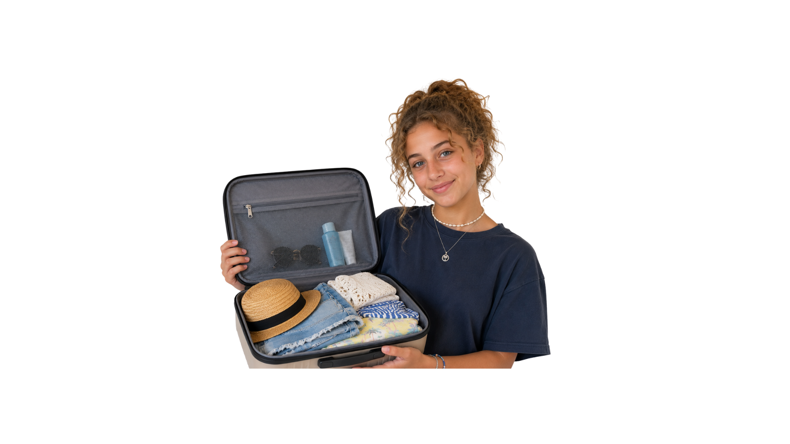
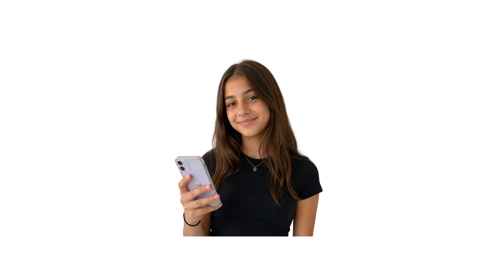
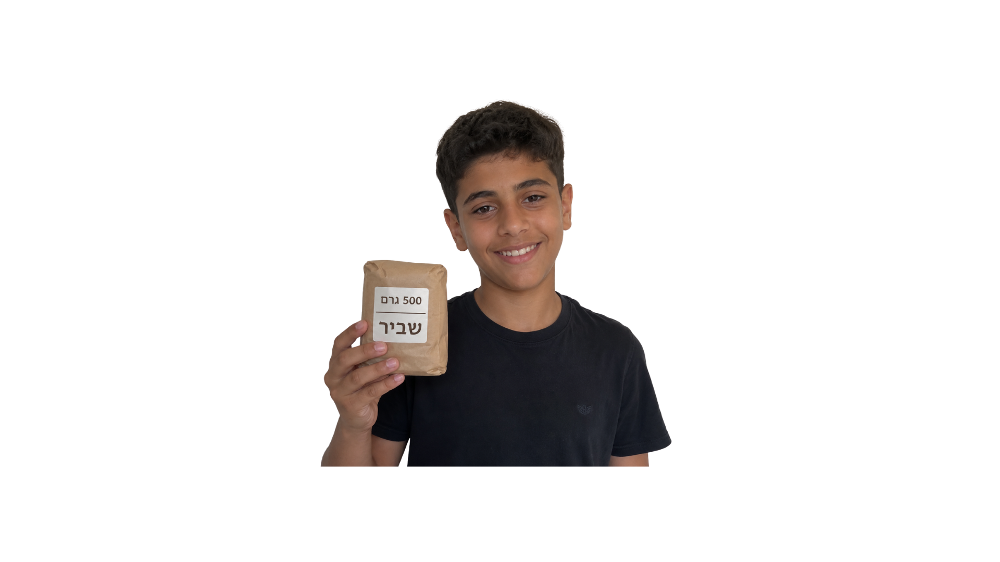
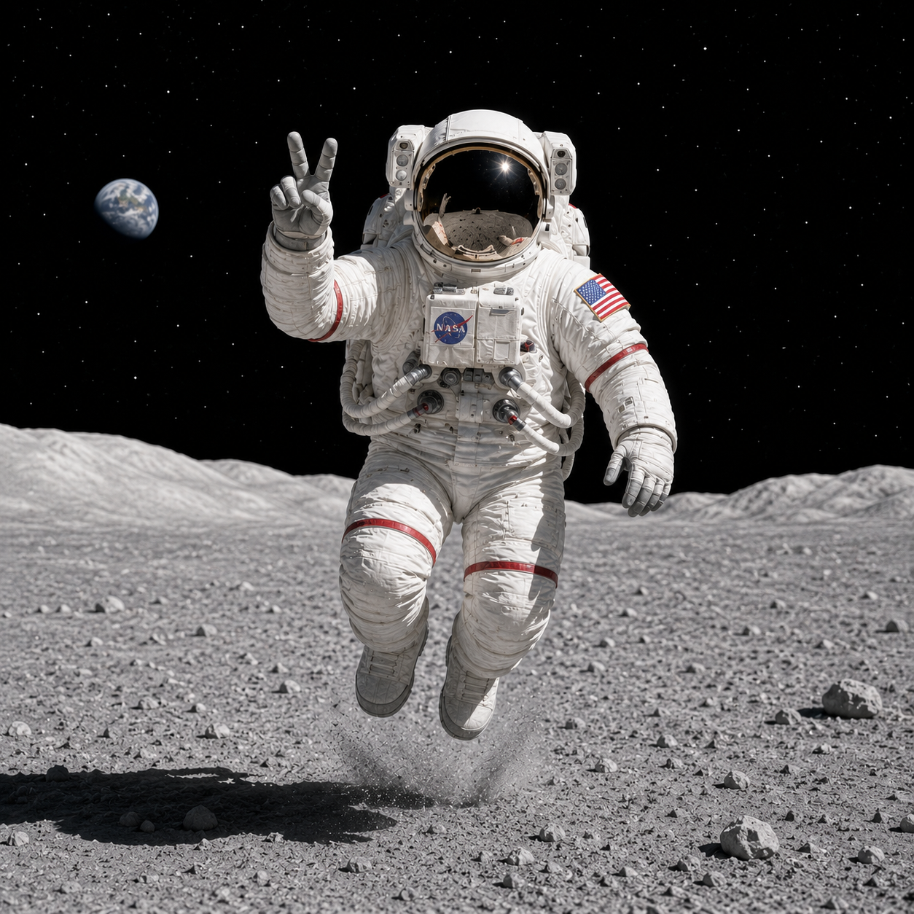

الكتلة، الوزن والفروق بينهما
تعالوا نتعلم عن ذلك!
إحدى الجُمل التالية غير صحيحة علميًا، ما هي؟
اضغطوا على الشخصية



الجملة التي قالتها حنان - "وزنْتُ هاتفي المحمول. وزنه 174 غرام بالضبط"،
تبدو طبيعية تمامًا في اللغة اليومية التي نستخدمها، لكنها غير دقيقة من الناحية العلمية.
يجب أن نقول: "كتلة هاتفي المحمول هي 174 غرام".
هل تريدون معرفة السبب؟ وما الفرق بين الوزن والكتلة؟ هذا ما سنتعلمه في هذه الوحدة!
الكتلة، الوزن والفروق بينهما
كيف ترغبون في التعلم؟


الكتلة، الوزن والفروق بينهما
اقرأوا بإمعان ما هي الكتلة وما هو الوزن (اضغطوا على + لقراءة الشرح الموسّع):
الكتلة هي كمية المادة الموجودة في جسم معين (مثلًا: الإنسان، الحجر، الحيوان أو غرض معين).
ميليغرام (ملغم): للأجسام الخفيفة جدًا، مثل الريشة.
غرام (غم): للأجسام الخفيفة، مثل الهاتف المحمول أو قلم الرصاص.
كيلوغرام (كغم): للأجسام الأثقل، مثل الحقيبة أو الإنسان.
طن: للأجسام الثقيلة جدًا، مثل السيارة أو الطائرة.
الوزن هو القوة التي تشغّلها الجاذبية على جسم له كتلة.
لكل جرم سماوي (مثل الكرة الأرضية، القمر أو أي كوكب آخر) قوة جاذبية مختلفة تؤثر على الأجسام القريبة منه.
كلما كانت قوة الجاذبية أكبر، كان وزن الجسم على ذلك الجرم السماوي أكبر، والعكس صحيح.
مثلًا، وزن الشخص الموجود على الكرة الأرضية سيكون أكبر مقارنةً بوزنه إذا وقف على القمر، حيث إنّ قوة الجاذبية على القمر أضعف بـ 6 مرات. ولهذا السبب نشعر بأننا أخف على القمر.
في اللغة اليومية، نتّبع استخدام الكيلوغرام والغرام عند وصف الوزن، لكن هذا غير دقيق علميًا، لأنهما وحدتان تصفان الكتلة.
يُقاس الوزن بوحدات تُسمى نيوتن (N)، نسبةً إلى العالِم إسحاق نيوتن الذي اكتشف قانون الجاذبية.
في حياتنا اليومية، لا نسمع عادةً عبارة "وزني 784 نيوتن"، لكن هذا هو المصطلح العلمي الدقيق.
رائد فضاء يستعد للسفر إلى القمر.
اضغطوا على الصورة لاكتشاف كتلته ووزنه
على الكرة الأرضية.

الوزن:الكتلة ضرب شِدّة قوة الجاذبية على الكرة الأرضية.
أُطلِق رائد الفضاء إلى القمر.
اضغطوا على الصورة لاكتشاف كتلته ووزنه على القمر.

الوزن:الكتلة ضرب شِدّة قوة الجاذبية على القمر (أصغر مقارنةً بالكرة الأرضية).
رائد الفضاء يستعد للسفر إلى القمر
الوزن:الكتلة ضرب شِدّة قوة الجاذبية على الكرة الأرضية.
الوزن:الكتلة ضرب شِدّة قوة الجاذبية على الكرة الأرضية.
الوزن:الكتلة ضرب شِدّة قوة الجاذبية على القمر
(أصغر مقارنةً بالكرة الأرضية).
هل هناك فرق في كتلة ووزن رائد الفضاء
على الكرة الأرضية، مقارنةً بالقمر؟

من المهم أن نتذكر - الفرق الأساسي بين الكتلة والوزن:
الكتلة
كتلة الجسم لا تتغير، حتى إذا نقلنا الجسم إلى مكان فيه قوة جاذبية مختلفة.
لماذا؟ لأن كمية المادة التي يتكوّن منها لا "تختفي" ولا "تُضاف".
الوزن
الوزن يتغير بحسب قوة الجاذبية في المكان الذي يتواجد فيه الجسم.
في المكان الذي تكون فيه قوة الجاذبية أقوى، يكون وزن الجسم نفسه أكبر، والعكس صحيح.
نوعان من الموازين – كيف تؤثر عليهما قوة الجاذبية؟
ميزان الكفّتين
ماذا تعلّمنا لغاية الآن؟
صنّفوا الجمل في المكان المناسب، وستحصلون على جدول يلخّص الفروق الأساسية بين الكتلة والوزن.
ماذا بقيَ عالقًا في عقولنا؟
سؤالان بسيطان للإحماء قبل أن نتقدم
اختاروا لكل تعريف المصطلح المناسب له.
ركّزوا، لديكم محاولة واحدة فقط.
القوة التي تشغّلها الجاذبية على الجسم، وتتغير بحسب قوة الجاذبية.
كمية المادة في الجسم. متساوية في كل مكان، وتُقاس بالميليغرام، الغرام، الكيلوغرام والطن.
الكرة الأرضيّة